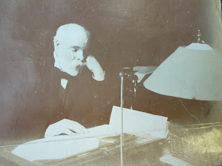
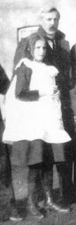

 |
| James Allingham at his desk |
{kind=link}
He worked out the cost of the printing, the office and the distribution and soon became fascinated. He saw the venture in its clearest and most material light. To him it appeared as a method of selling low-grade bulk paper at forty times its value with the added advantage that the more of it one sold, the higher the profit became. He saw too that it was the ink on the paper that did the selling, so, the only real problem was which words to print with the ink. (Dance of the Years 1943)
 |
| Margery &Herbert |
{kind=link}
Taxes on advertising, on newspapers and on paper itself had
been repealed between 1853-1861 and the population was growing. More people
were living in cities, available leisure and average income levels increased. As
well as more readers, the second stage of the Industrial Revolution brought faster
printing and typesetting machines; paper made from wood pulp was significantly
less expensive and more abundant than paper made from rags. The c19th railway
revolution transformed distribution networks. This was the beginning of the
Great Age of Print.
James Allingham, living in south London but with printworks
in the Farrington Road was well-placed to profit from a publishing boom but the
question remained ‘Which words to print with the ink?’ He chose religion. Popular
preachers attracted large crowds; sales of tracts, hymn books and cheap papers then
helped keep the enthusiasm flowing. This was a respectable way of reaching out
to the vast working and lower middle class. It was also commercial. Of the four
printed pages that made James Allingham’s registration issue of The
Christian Glowworm (soon The Christian Globe) advertisements filled
an entire page – most of them for patent medicines. Patent medicine
advertisements always went well in religious papers. They felt more
trustworthy.
{kind=link}
Well before the end of the c19th, however, far more successful
print entrepreneurs – George Newnes, Arthur Pearson, Alfred and Harold
Harmsworth, John Leng (Scotland) – had succeeded in capturing the mass market.
They didn’t want to improve their readers, merely to entertain and earn from
them. Ha’pennies were as acceptable as pennies if they more than doubled the
numbers of purchasers. The growth of the late 19th and early c20th
publishing empires is a textbook study in capitalism. Proprietors began to buy
up the trees and the ink as well as the machinery and distribution networks. Factory
style production enabled identically formatted fiction magazines to fly off the
presses with the quantity and speed of newspapers.
ChatGPT hadn’t been invented. The publishers still needed humans
to write the words to print with the ink. Words - those magical catalysts that
transformed bulk-bought paper from a commodity to a product, then made the
inexplicable transference from the page into readers’ hearts and minds. Herbert
Allingham, Margery’s father, was one of the many prolific fiction writers who
kept the readers coming back for more.
I wrote about Herbert in Fifty Years in the Fiction Factory. The fifty years referred to his working life (1886-1936) much of it spent writing serial stories for Alfred Harmsworth’s Amalgamated Press. The word ‘Factory’ struck a chord with author and musician, Michael Moorcock. He remembered that when he was working for Fleetway Publishing -- the company that had taken over the Amalgamated Press in the late 1950s – he had put a sign up in his window: HELP I AM A PRISONER IN A WORD FACTORY.
| Michael Moorcock |
.jpg){kind=link}
In Margery Allingham’s early days, when she was writing up
the plots of silent films for her Aunt Maud (a magazine editor at the Amalgamated
Press), she learned to produce thousands of words in a week to earn herself the
time to get married, have a holiday, produce the first of her Campion novels.
She wrote by hand or dictated. She didn’t have Michael Moorcock’s typing speeds.
Most of his early science fiction stories were short novels written in only three days
– because that was the longest period he could afford not to be working for
Fleetway. I’m not sure Herbert Allingham ever took time off (until very late in
his life when he went on the road with his son). He never escaped into the
world of books.
Michael Moorcock makes the fiction factory sound a far livelier
place than Herbert experienced. He writes of swapping stories with his then
wife Hilary Bailey – a brilliant intellectual from Newnham College, initially
frustrated by her lack of confidence as a novelist but then producing pony
stories at a set rate per thousand words, despite never having ridden a horse. He
and she swapped ideas and finished each other’s work. The anonymity of factory
fiction-writers was a definite help to authors working in unofficial
collaborations or changing their characters’ names and a few plot details
before re-selling a story to a rival publisher.
‘There was an easier, somewhat piratical feel about Fleet Street in
those days,’ writes Moorcock. ‘I miss it.’ He defends their ‘immorality’ in changing
titles and reselling serials: ‘We knew we were being exploited and developed
strategies to resist the bosses. They were recycling our work after all.’
Moorcock and Bailey learned from the fiction factory, then
escaped it. They embraced modernism and the avant-garde, applied literary
techniques to science fiction writing, developed their unique voices and
personal audiences. Moorcock found
himself being invited to talk to universities and contribute to intellectual
magazines. ‘I compared this to the barbarians being invited to address the
Chinese scholars, aware their own thinking was becoming moribund.’ Margery
Allingham also escaped, though perhaps not so completely as she’s still too
often seen as confined to the detective box, discussed in relationship to
Agatha Christie or Dorothy Sayers, rather than as a free-standing novelist.
The great age of print has gone. I’m writing this on my laptop;
it will be published on the internet. No ink, no paper, unless I chose to print
it out, then feeling mildly guilty that I’m using world resources and harming
the environment. This Authors Electric blogsite was founded when some
traditionally published authors realised their core middle market was gone, or
at least profoundly changed. We are a unpaid, self-selecting independent publishing group, yet Blogger, the
platform which hosts our work, is provided by Google, the most valuable company
in the world. It’s hard to believe Google is motivated by altruism.
{kind=link}
{kind=link}
Michael Moorcock expressed a feeling of kinship with Herbert
and Margery and respect for their art. ‘There are no “pulp” writers’, he said, ‘Only writers who publish
in pulps.’ He’s recently written a ‘Whitefriars’ series blending
autobiographical detail from his time at Fleetway with fantasy adventure. I
haven’t read them yet but anticipate delight in store. The question is no
longer which words to print with the ink (or RGB display), but which WORLDS.
{kind=link}